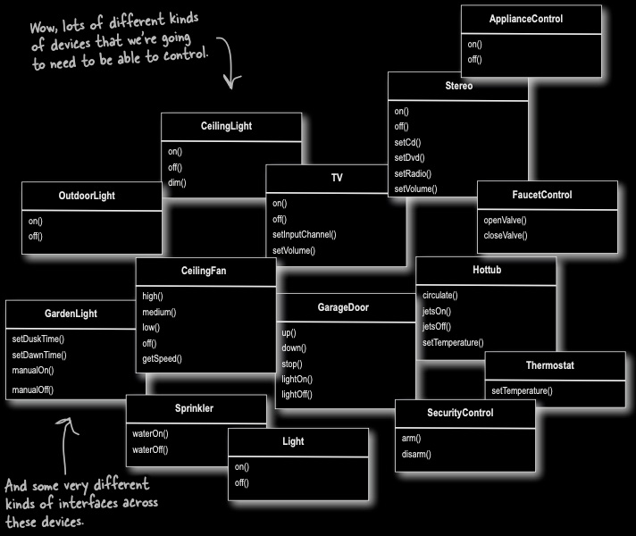
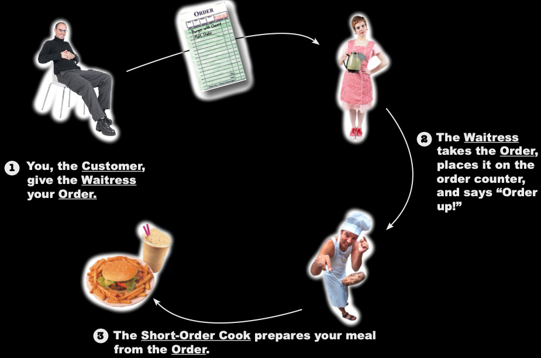
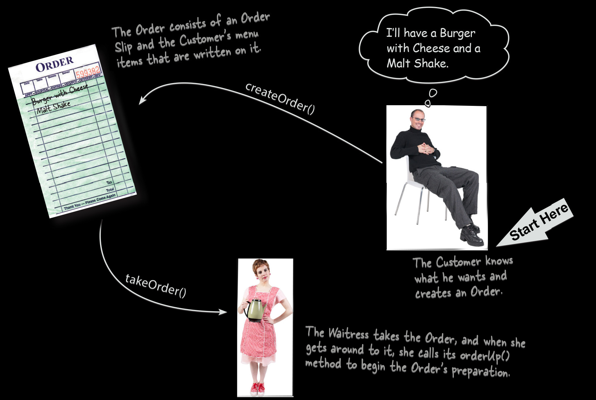
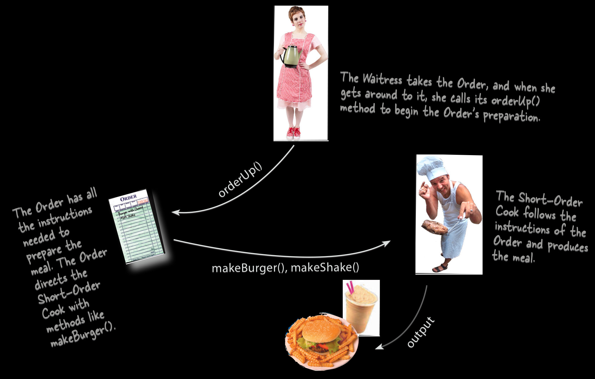
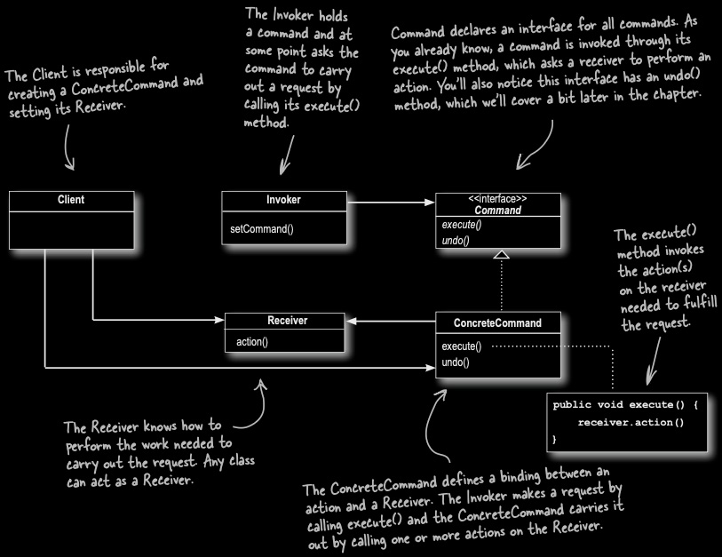

You've been hired to design the API for a universal home-automation remote. It has seven programmable slots, on/off buttons for each, and one global undo button. Vendors will supply the actual devices (lights, hot tubs, garage doors, stereos) and you don't get to control what methods those classes expose.
Vendor Classes

Vendor classes diagram. (Source: Eric Freeman and Elisabeth Robson, Head First Design Patterns, O'Reilly Media).
Diagram showing twelve vendor-supplied device classes with no common interface. Two handwritten annotations read: Wow, lots of different kinds of devices that were going to need to be able to control and And some very different kinds of interfaces across these devices. The twelve classes and their methods are as follows. ApplianceControl declares on() and off(). Stereo declares on(), off(), setCd(), setDvd(), setRadio(), and setVolume(). CeilingLight declares on(), off(), and dim(). OutdoorLight declares on() and off(). TV declares on(), off(), setInputChannel(), and setVolume(). FaucetControl declares openValve() and closeValve(). CeilingFan declares high(), medium(), low(), off(), and getSpeed(). GarageDoor declares up(), down(), stop(), lightOn(), and lightOff(). Hottub declares circulate(), jetsOn(), jetsOff(), and setTemperature(). Thermostat declares setTemperature(). GardenLight declares setDuskTime(), setDawnTime(), manualOn(), and manualOff(). Sprinkler declares waterOn() and waterOff(). Light declares on() and off(). SecurityControl declares arm() and disarm().
The Naive First Attempt
public void onButtonWasPushed(int slot) {
if (slot == 1) {
light.on();
} else if (slot == 2) {
hottub.jetsOn();
} else if (slot == 3) {
garageDoor.up();
}
// ...and one more else-if for every slot, forever
}
Why The Naive Attempt Breaks
Every new vendor class means editing this method again.
The remote's own source code now depends on every vendor class that exists.
Separation of concerns failure: The remote should know how to interpret a button press; it should not need to know how a hot tub works.
The Command Design Pattern
Encapsulates a request as an object, thereby letting you parameterize other objects with different requests, queue or log requests, and support undoable operations.
Objectville Diner

Objectville Diner diagram. (Source: Eric Freeman and Elisabeth Robson, Head First Design Patterns, O'Reilly Media).
Circular flow diagram illustrating the Command design pattern using a diner analogy with three numbered steps. Step 1 (bottom left): A Customer hands an Order slip to the Waitress. The caption reads: You, the Customer, give the Waitress your Order. Step 2 (right): The Waitress takes the Order, places it on the order counter, and says Order up! Step 3 (bottom center): The Short-Order Cook receives the Order and prepares the meal, shown as a burger, fries, and a drink. Arrows connect the three steps in a clockwise circular flow: from Customer to Order slip to Waitress, from Waitress to Short-Order Cook, and from Short-Order Cook to the prepared meal.
Objectville Diner

Objectville Diner diagram. (Source: Eric Freeman and Elisabeth Robson, Head First Design Patterns, O'Reilly Media).
At the top right, a Customer is seated with a thought bubble reading: Ill have a Burger with Cheese and a Malt Shake. A Start Here arrow points to the Customer, and a caption reads: The Customer knows what he wants and creates an Order. An arrow labeled createOrder() points left to an Order slip showing Burger with Cheese and Malt Shake written on it. A handwritten annotation reads: The Order consists of an Order Slip and the Customers menu items that are written on it. A second arrow labeled takeOrder() points down-right from the Order slip to the Waitress. A caption reads: The Waitress takes the Order, and when she gets around to it, she calls its orderUp() method to begin the Orders preparation.
Objectville Diner

Objectville Diner diagram. (Source: Eric Freeman and Elisabeth Robson, Head First Design Patterns, O'Reilly Media).
At the top, the Waitress calls orderUp() on the Order, shown as an arrow labeled orderUp() pointing down-left to the Order slip. A caption reads: The Waitress takes the Order, and when she gets around to it, she calls its orderUp() method to begin the Orders preparation. A handwritten annotation on the left reads: The Order has all the instructions needed to prepare the meal. The Order directs the Short-Order Cook with methods like makeBurger(). An arrow labeled makeBurger(), makeShake() points right from the Order slip to the Short-Order Cook. A caption reads: The Short-Order Cook follows the instructions of the Order and produces the meal. A final arrow labeled output points down-left from the Short-Order Cook to the prepared meal, shown as a burger, fries, and a malt shake.
The Order Object
The order has exactly one relevant method from the waitress's point of view: orderUp().
The order also holds a reference to whoever needs to do the work (the Cook).
The waitress never needs to know what is being cooked, or how. She only knows every order she's handed supports orderUp().
The Command Pattern

Command Pattern class diagram. (Source: Eric Freeman and Elisabeth Robson, Head First Design Patterns, O'Reilly Media).
UML class diagram showing the Command design pattern structure. Client (top left) has no fields or methods shown. A handwritten annotation reads: The Client is responsible for creating a ConcreteCommand and setting its Receiver. Invoker (top center) declares one method: setCommand(). A solid arrow connects Invoker to the Command interface. A handwritten annotation reads: The Invoker holds a command and at some point asks the command to carry out a request by calling its execute() method. Command (top right) is an interface (with label interface) declaring two methods: execute() and undo(), both italicized. A handwritten annotation reads: Command declares an interface for all commands. A command is invoked through its execute() method, which asks a receiver to perform an action. Youll also notice this interface has an undo() method, which well cover a bit later in the chapter. ConcreteCommand (center right) implements the Command interface via a dashed line with an open triangle arrowhead pointing up to Command. ConcreteCommand declares two methods: execute() and undo(). A dotted line connects execute() to a code snippet showing: public void execute() { receiver.action() }. A handwritten annotation reads: The execute() method invokes the action(s) on the receiver needed to fulfill the request. A second handwritten annotation reads: The ConcreteCommand defines a binding between an action and a Receiver. The Invoker makes a request by calling execute() and the ConcreteCommand carries it out by calling one or more actions on the Receiver. Receiver (center left) declares one method: action(). A solid arrow connects ConcreteCommand to Receiver. A handwritten annotation reads: The Receiver knows how to perform the work needed to carry out the request. Any class can act as a Receiver. A solid arrow also connects Client to both Receiver and ConcreteCommand, indicating the Client creates and wires them together.
Command Pattern Roles
The Client decides what Command to create.
The Invoker asks for something to happen, without knowing how it happens.
The Command is a stand-in for the action, that can be handed around and triggered later.
The Receiver is the one who actually knows how to do the work.
The ConcreteCommand is the specific kind of Command.
Map the Diner (15 minutes)
Map the diner element to its Command Pattern role.
public interface Command {
public void execute();
}
A Concrete Command
public class LightOnCommand implements Command {
Light light;
public LightOnCommand(Light light) {
this.light = light;
}
public void execute() {
light.on();
}
}
The Invoker
public class SimpleRemoteControl {
Command slot;
public SimpleRemoteControl() {}
public void setCommand(Command command) {
slot = command;
}
public void buttonWasPressed() {
slot.execute();
}
}
Putting It All Together
public class RemoteControlTest {
public static void main(String[] args) {
SimpleRemoteControl remote = new SimpleRemoteControl();
Light light = new Light();
LightOnCommand lightOn = new LightOnCommand(light);
remote.setCommand(lightOn);
remote.buttonWasPressed();
}
}